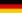
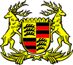

Porsche
Porsche SKODA
SKODA Volkswagen
Volkswagen  SEAT
SEAT| Dr. Ing. h.c. F. Porsche AG | |
| Тип |
Акционерное общество |
|---|---|
| Листинг на бирже |
FWB:PAH3 |
| Год основания |
1931 |
| Прежние названия |
Dr. Ing. h.c. F. Porsche GmbH |
| Основатели |
Фердинанд Порше |
| Расположение |
 Германия: Штутгарт |
| Ключевые фигуры |
|
| Отрасль |
Автомобилестроение |
| Продукция |
Элитные спортивные автомобили |
| Оборот |
€7,79 млрд (2010 год) |
| Число сотрудников |
12 722 человека |
| Материнская компания |
Porsche Automobil Holding SE |
| Сайт | |
Деятельность Dr. Ing. h.c. F. Porsche AG
Компания выпускает спортивные автомобили класса «люкс», а также внедорожники. Производство Porsche в значительной мере кооперируется с Volkswagen. Бок о бок с участием в автоспорте ведется работа над совершенствованием конструкции автомобиля (и его узлов) как такового: в разные годы были разработаны синхронизаторы механической КПП, автоматические КПП с возможностью ручного переключения (впоследствии — с кнопками переключения на руле), турбонаддув для серийного автомобиля, турбонаддув с изменяемой геометрией крыльчатки турбины в бензиновом двигателе, электронно-управляемая подвеска и так далее.100 % акций компании принадлежит компании Porsche Automobil Holding SE. Porsche — публичная компания, часть её акций обращается на Франкфуртской фондовой бирже и во всемирной электронной системе Xetra. Крупные пакеты акций принадлежат семьям Порше и Пиех. Президент и главный управляющий компании с 1993 года — Венделин Видекинг. Выручка компании за 2009/2010 финансовый год составила 7,79 миллиардов евро, что является для компании абсолютным рекордом за всю историю. За этот же отчетный период продано 81 850 автомобилей, а произведено — 89 123.
Также компания уже в течение длительного времени ведет активную деятельность по организации спортивных клубов (клубы Porsche есть во многих странах Европы и Америки) и соревнований среди различных классов своих машин, регулярно проводятся несколько кубковых соревнований. Этому направлению её деятельности посвящена компьютерная игра Need for Speed: Porsche Unleashed.
Логотип
Эмблема фирмы представляет собой герб, несущий в себе следующую информацию: красно-черные полосы и оленьи рога являются символами германской земли Баден-Вюртемберг (столица Баден-Вюртемберга — город Штутгарт), а надпись «Porsche» и гарцующий жеребец в центре эмблемы напоминают о том, что родной для марки Штутгарт был основан как конная ферма в 950 году. Впервые этот логотип появился в 1952 году, когда марка вышла на рынок США, для лучшей узнаваемости. До этого на капотах Porsche 356 просто была надпись «Porsche».
Герб королевства Вюртемберг (1922 - 1933)
Герб Штутгарта
История
1931—1948: от задумок к серийному производству
К моменту выпуска первого автомобиля под своим именем Фердинанд Порше успел накопить немалый опыт. Основанное им 25 апреля 1931 года предприятие Dr. Ing. h. c. F. Porsche GmbH под его началом уже успело поработать над такими проектами, как 16-цилиндровый гоночный Auto Union и Volkswagen Kafer, ставший одним из самых продаваемых автомобилей в истории. Накануне Второй Мировой, в 1939 году, был разработан Porsche 64, в котором уже угадывались черты будущего Porsche 356. Для постройки этого экземпляра Фердинанд Порше использовал многие компоненты от Volkswagen Kafer.
В течение Второй Мировой компания занималась выпуском военной продукции — штабных автомобилей и амфибий. Фердинанд Порше принимал участие в разработке немецких тяжелых танков «Тигр».
В декабре 1945 года он был арестован по обвинению в военных преступлениях и помещен в тюрьму, где провел 20 месяцев. В то же время его сын Фердинанд (краткое имя Ферри) Антон Эрнст решает начать выпуск собственных автомобилей. На лесопилке австрийского города Гмюнд, Ферри, с помощью нескольких знакомых инженеров, собрал прототип 356-й модели с мотором в базе и алюминиевым открытым кузовом, и начал подготовку к её серийному производству. В июне 1948 года этот экземпляр был сертифицирован для дорог общего пользования. Как и 9 лет назад, тут вновь были использованы агрегаты от Volkswagen Kafer, включая 4-цилиндровый мотор воздушного охлаждения, подвеску и коробку передач. У первых серийных машин было принципиальное отличие — двигатель перенесли за заднюю ось, что позволило удешевить производство и освободить пространство для двух дополнительных мест в салоне. Спроектированный кузов обладал очень хорошей аэродинамикой — Сх равнялся 0,29. В 1950 году фирма вернулась в Штутгарт.
Porsche 356 образца 1948 года считается первым настоящим автомобилем марки, с которого ведется история Porsche как самостоятельного автопроизводителя. Тот самый прототип сегодня хранится в музее Porsche.
Фирма занималась не только автомобилями, под её именем выпускались и тракторы.
1981—1988: вклад нового директора
Ферри Порше отправляет Фюрманна в отставку, и на его место приходит Питер Шутц, американский менеджер Porsche. При нём модели 911 вернули негласный статус основного автомобиля фирмы. В 1982 году появляется кабриолет, а через год базовой становится 911 Carrera с 231-сильной силовой установкой. Новинка 1985 года — версия Turbo-look (она же Supersport), являвшаяся обычной Carrera с ходовой и кузовом от модели Turbo, который в свою очередь имел более широкие задние крылья и большой спойлер (иногда его называют «столик для пикника», «поднос» или «китовый хвост»). Сама модель Turbo, годом позже, стала доступна в версии SE, или так называемой Slantnose со скошенной передней частью кузова и убирающимися фарами. В то же время появляется облегченная 911 Carrera Clubsport, наследница Carrera RS 1970-х и предшественница современной GT3.История Porsche 959 началась в 1980 году, когда в мировом чемпионате по ралли была утверждена новая «Группа Б». Ряд компаний были привлечены либеральными требованиями — не было почти никаких ограничений, кроме выпуска 200 омологационных экземпляров. В Porsche тоже решили принять участие. Шутц пришёл к выводу, что нужно показать весь инженерный потенциал компании. Техническая начинка была на высоком уровне: мощность 6-цилиндрового мотора (2,8 л, два турбокомпрессора) равнялась 450 л. с.; на каждое колесо полноприводной трансмиссии приходилось по 4 амортизатора, контролируемых компьютером (также он распределял крутящий момент между осями и мог изменять дорожный просвет); детали кузова изготовлялись из кевлара — легкого и прочного пластикового композитного материала. На стадии доводки Porsche 959 дважды участвовал в «Ралли Дакар» и в 1986 году занял 2 первых места в «абсолюте».
Тем временем оказалось, что «Группы Б» больше нет: трагическая смерть нескольких пилотов и зрителей на ралли побудила федерацию автоспорта FISA закрыть её. В период с 1986—1988 годов произвели больше запланированных 200 штук.
Проект 959 оказался убыточен, но заложенные в нём идеи пригодились для развитий гоночных технологий в серийных автомобилях: упрощенной трансмиссией со всеми ведущими оснащались 964-е (1989—1993) и последующие версии, современную систему турбонаддува в свое распоряжение получила линейка Turbo (964/993), схожая передняя часть кузова с фарами и воздуховодами была у 993-х (1993—1998), воздухозаборники версии 996 Turbo (2000—2006) в переднем бампере и задних крыльях также напоминают ааналогичные у 959-й. Фирменная адаптивная подвеска PASM (ставится на все нынешние автомобили Porsche) является современным аналогом той сложной системы, что была впервые опробована на Porsche 959.
1989—1998: десятилетие перемен
В эти десять лет ушли со сцены ветераны фирмы — переднемоторные машины и классические 911-е. Вместо них ввели абсолютно новые Boxster и 911 (996) Carrera.Девять лет выпускали 901-ю и шестнадцать — 930-ю, но теперь такого Porsche не могла себе позволить; из-за этого 964 прожил всего 4 года. Это был финальный период для версии Targa в её классическом виде, равно как и для Turbo, и в какой-то степени для Carrera. Последняя теперь могла оснащаться полным приводом и автоматической КП. Кузов был изменен сильнее, чем могло показаться на первый взгляд: разработали новый каркас, серьёзно улучшили аэродинамику (Сх снизился с 0,40 до 0,32) и добавили активный задний спойлер. Отказались от архаичной торсионной подвески. Двигатель расточили до 3,6 л. Задне- и полноприводные версии именовались соответственно Carrera 2 и Carrera 4; спортивная Clubsport переименована обратно в RS. Turbo, первые 3 года, оснащалась проверенным 3,3 л мотором, а в 1993 году тоже получила 3,6-литровый вариант (360 л. с.). Ограниченным тиражом разошлись спецверсии 911 America Roadster и полугоночная 911 Turbo S. Всего выпустили около 62 тысяч 964-х. Суммарный объём её современников (968, 1992—1995 и 928 GTS, 1991—1995) не превысил и 15.
Экономический кризис начала 90-х застал марку не в лучшей форме. В эти годы объёмы производства снизились, компания несла убытки. В 1993 году очередным руководитилем Porsche назначен Венделин Видекинг, сменивший Хайнца Браницки (он стал директором после Арно Бона, а тот, в свою очередь, после Шутца). В этом же году в продажу поступило четвёртое поколение её флагмана — под названием 993.
Только теперь был сделан значительный шаг в эволюции модели. Встроенные аэродинамичные бампера, новая светотехника и более плавные формы кузова придали Porsche 911 современный облик. Мотор был в очередной раз немного форсирован, но серьёзно доработана была задняя подвеска. Turbo-look теперь обозначалась просто Carrera S/4S. Targa превратилась в обычное купе, только со сдвигающейся панорамной крышей, а Turbo заполучил себе полный привод и серьёзно модернизированный двигатель 3,6 л с двойным турбонаддувом. Его традиционные отличия от обычных 911-х — широкие задние крылья и шины — были все так же заметны, а большой задний спойлер вырос ещё больше, так как повышенная мощность (408 сил) заставила применить более крупные интеркулеры. Версия Turbo S 1997 года, с ещё более мощным двигателем и небольшими изменениями в экстерьере, стала последней новинкой в 34-летней истории главного спорткара фирмы.
С момента своего появления 911 Turbo всегда являлся вершиной модельного ряда 911-х. Тем не менее, самым быстрым и дорогим среди 993-х была его дорожно-гоночная модификация GT2 (теперь так именовалась гоночные RSR). Эту машину создали для новообразованного чемпионата BRP Global GT Series, где, помимо всего прочего, разрешалось применение турбонаддува. Поэтому стандартный мотор не подвергся серьёзным доработкам, в отличие от остального: иннженеры отказались от «балласта» в лице привода на переднюю ось и внесли необходимые для гонок усовершенствования в кузов. В 1998 году мотор GT2 был улучшен — добавлено двойное зажигание и повышена мощность до 450 л. с. 993 GT2 часто улетали с дороги, за что получили прозвище widowmaker — «оставляющий вдов».
1998-й стал годом потерь и приобретений. Летом из ворот предприятия в Цуффенхаузене выехал последний «воздушный» 911-й. За всю историю таких произвели 410 тысяч; вклад в эту цифру 993-го — 69 тысяч. Тогда же Porsche отмечала свой 50-летний юбилей. И в этот же год, в марте, в возрасте 88 лет скончался Фердинанд Антон Эрнст (Ферри) Порше. В делах компании он не принимал почти никакого участия с тех пор, как в 1989 году поселился на австрийской ферме в Цель-ам-Зее.
1996 — наше время: новые модели и растущий аппетит
Усилия Видекинга стали очевидны под конец 1996 года, когда поступил в продажу центральномоторный родстер Boxster (тип 986), ставший носителем нового лица марки. Автор его дизайна — Харм Лагаай, возглавлявший работы над экстерьерами всех Porsche 90-х и первой половины 2000-х годов, при создании облика отталкивался от ранних машин компании — открытых 550 Spyder и 356 Speedster. Название модели искусственное и образовано из двух слов — boxer (то есть оппозитный мотор) и roadster. В отличие от своих предшественников, чьи открытые версии переделывались из закрытых, Boxster с самого начала проектировался как открытый автомобиль. Единственным вариантом в линейке был родстер с 2,5-литровым 6-цилиндровым оппозитным двигателем, пока к нему в 2000 году не присоединился Boxster S (3,2 л). Новый компактный спорткар по относительно невысокой цене был очень тепло принят рынком и возглавлял итоги годовых продаж Porsche вплоть до 2003 года, пока его не обогнал дебютировавший годом ранее Cayenne. Производственных мощностей единственного завода не хватало, и часть автомобилей Boxster собиралась в Финляндии, силами компании Valmet Automotive. Его конкурентами были Audi TT Roadster, BMW Z3 и Mercedes SLK, которые тоже являлись родстерами и появились практически одновременно с изделием от Porsche.После Boxster все внимание было приковано к 911-й. В 1997 году на Франкфуртском автосалоне представили новую Carrera, и стало ясно, что у неё много общего с младшим братом, начиная от почти идентичных друг другу передних частей кузова, с фарами в форме капель, и схожими интерьерами, и заканчивая общей конструкцией двигателей. Такие решения позволили сократить расходование средств на разработку и производство, так как в те годы финансовые ресурсы марки были все ещё сильно ограничены.
Carrera в 996-м кузове прибавила в мощности и размерах, но при этом осталась первоклассным спортивным автомобилем. Например, британский журнал Evo с начала своего существования (1998) называл 911-ю (и 996, и 997) «Спорткаром года» 6 раз.
В 1998 году появились кабриолет и Carrera 4, а в следующем году было сразу две важных новинки: предназначенная для любительских соревнований GT3 (это наименование пришло на смену RS) и новый флагман ряда, 996 Turbo. Моторы двух последних серьёзно отличались от стандартных, так как они базировались на конструкции агрегата спортпрототипа GT1 1998 года. Атмосферный вариант достался GT3, а с двойным наддувом — Turbo. Кроме того, флагман стал обладателем не только самого мощного мотора, но и особенного внешнего вида: специально для него внесли изменения в бампера и светотехнику, и это без учета отличительных особенностей Porsche — спойлера и широкого кузова, у которого на этот раз появились отверстия в задних крыльях. Новому 3,6 л двигателю с жидкостным охлаждением не требовались большие радиаторы, из-за чего отпала необходимость в использовании заднего спойлера Whale-tail. Новая конструкция стала ощутимо компактней. GT3 ничем таким не оснащался, хотя у него тоже были свои особенности, вроде облегченного кузова, заниженной подвески и отсутствия задних сидений.
Porsche 996 GT3 производился с 1999 по 2004, а её улучшенная модификация GT3 RS — с 2003 по 2005. Модель Turbo — с 2000 по 2005; в последние 2 года в продаже находились Turbo Cabriolet и Turbo S (X50 в США) с двигателем мощностью 450 л. с.
Новый GT2 (2001) идеологически был скорее немного доработанным Turbo, чем его дорожно-гоночной версией, как в прошлом поколении. Причина этому — несоответствие мировым автоспортивным регламентам, так как турбонаддув был уже под запретом. Конструктивно — тот же Turbo, только с задним приводом, другим передним бампером и крупным задним антикрылом. Сначала оснащался 462-сильным мотором, позднее — 483-сильным.
Самый необычный автомобиль в истории марки был представлен в 2002 году. Это «спортивно-утилитарный» вседорожник Cayenne, разработанный совместно с Volkswagen и во многом аналогичный Volkswagen Touareg. Для его выпуска компания построила новый завод в Лейпциге. Производство началось в следующем году, и Cayenne сразу стал самым востребованным продуктом марки, хотя реакция на спорный дизайн и на сам факт существования такого автомобиля была неоднозначной. Половина продаж и основная прибыль приходится все же на Cayenne, который обновили в 2007 году. Помимо атмосферных версий с V6 и V8, существуют наддувные Turbo и Turbo S. Модельный ряд после модернизации расширен введением 2 новых модификаций: GTS и Turbo S с 550-сильным двигателем.
Carrera до 2002 года критиковали за излишнее сходство носовой части с младшим Boxster, так что в ходе модернизации все атмосферные варианты получили светотехнику от Turbo, и различить их теперь стало легче. В очередной раз доработали силовые установки (с 300 до 320 л. с.; с 3,4 до 3,6 л) и изменили бампера, колеса и т. д. В линейке вновь объявилась версия, подобная модели Turbo, на этот раз исключительно полноприводная Carrera 4S. Её новая отличительная черта — красная полоска между фонарями.
На Женевском автосалоне 2000 года одной из самых значительных премьер оказался показ суперкара-концепта Carrera GT, а серийным он стал только через 4 года. Фактически, история этого проекта ещё длиннее, и все началось с гоночного мотора, разработанного для одной из команд Формулы-1 в 1992 году. Финансовые трудности Porsche заставили приостановить работу в этом направлении. Потом его переделали под регламент «24 часов Ле-Мана» (2000) и снова забросили. В конце концов, Видекинг решил, что этому мотору самое место в будущей Carrera GT. Это V10 объёмом 5,7 л мощностью 612 л. с. Его потенциалу соответствовало все остальное: 6-ступенчатая КПП с керамическим сцеплением, углекерамические тормоза и некоторые силовые элементы кузова, изготовленные из углеволоконного композита.
За те два года, что он производился на фабрике в Лейпциге, собрали 1270 экземпляров, хотя ранее планировалось сделать 1500. Причина — введение новых требований в США по безопасности автомобилей, которые сделали бессмысленным дальнейшее производство или модернизацию этого суперкара.
Стараниями Вальтера Рерля, заводского тест-пилота марки и чемпиона по ралли, Carrera GT стал на некоторое время быстрейшим серийным автомобилем на Нордшляйфе Нюрбургринга — улучшить 7 минут 28 секунд на полсекунды смог Pagani Zonda F в только в 2007 году.
Летом 2004 представили 6-е поколение 911-й с индексом 997. На сей раз обошлись без революционных (для 911) изменений: спорткар в основном сохранил внешний вид предшественника и дизайн интерьера, но небольшие изменения коснулись почти всего кузова — фары (снова стали круглыми) и фонари, бампера, зеркала, колесные диски и т. д. Внутри — немного измененная приборная панель с классическими циферблатами. По технической части самая важная новость — возможность установки адаптивной подвески PASM на все версии.
Структура модельного ряда осталась той же — Carrera, Targa, GT2, GT3, Turbo. Дорожных GT1 больше не было, так как 911 ушли из этой категории а автоспорте.
Версия Turbo получила серьёзно доработанный мотор (480 л. с.; 620 Нм) с изменяемой геометрией крыльчатки турбины (фирменное обозначение VTG). Её особенность — в сочетании тяги небольших турбин на малых оборотах (малая инерционность оных компенсирует недостаток оборотов) и тяги более крупных — на высоких, что также уменьшает эффект турбо ямы. Такая турбина не первый год применяется на дизельных двигателях, но у бензиновых ещё не появлялась из-за трудностей, связанных с более высокими рабочими температурами. Новой стала система полного привода — в основе не вискомуфта, как раньше, а электронно-управляемое многодисковое сцепление (PTM), контролирующее распределение крутящего момента. Опция Sport Chrono Package позволяет нажатием соответствующей кнопки на 10 с увеличивать крутящий момент двигателя до 680 Нм. Прогресс в максимальной скорости небольшой — 310 км/ч против 305 у 996 Turbo, но в разгонной динамике он заметнее — 3,9 с в цикле 0—100 км/ч с МКПП и 3,7 с с АКПП, по официальным данным Porsche. Хотя американские журналисты, традиционно устраивающие заезды на ускорение на гоночных прямиках (drag-strip) со специальным покрытием, добивались даже более впечатляющих результатов (например, за 3,2 с сумели достичь 100 км/ч сотрудники издания Motor Trend).
GT3 (2006) с атмосферным 415-сильным двигателем почти так же быстр, как и Turbo, но на вершине линейки снова оказался GT2 (2007), дебютант автосалона во Франкфурте. На нём, как обычно, стоит улучшенный 530-сильный мотор от Turbo и используется заднеприводный вариант трансмиссии с системой контроля старта. Преиущество в весе — 100 кг в сравнении с полноприводным собратом. Экстерьер выделяется особенным антикрылом, измененными бамперами и колесами как у GT3.
Череда новинок временно прервалась в 2005 году, после премьер нового Boxster и купе на его базе Cayman (официально Porsche считает его самостоятельной машиной). Кроме обновления и пополнения линеек существующих машин, основные усилия компании с тех пор фактически были направлены на одну цель — подготовку к выпуску 4-дверной модели Panamera, которую официально представили в апреле 2009 года на автосалоне в Шанхае[3].
После 980 Carrera GT — самый быстрый серийный Porsche на Северной Петле до 2010 года: его время составляет 7 минут 32 секунды.
В 2008, после рестайлинга, у 997 серии появилась новая светотехника, бамперы, и трансмиссия PDK с двумя сцеплениями и надбавку мощности (Carrera 350 л.с., Carrera S 385 л.с., GT3 415 л.с.).
А в 2009 уже появились обновленные GT3 RS (450 л.с.), Turbo (500 л.с.) и гоночный GT3R.
В том же 2009 представили серийные Panamera S и Panamera Turbo мощностью 400 и 500 л.с.,соответственно.
В 2010 показали стандартную Panamera (300 л.с.), 911 Turbo S и революционный гоночный GT3R Hybrid мощностью 640 л.с.
Позднее публике были показаны GT2 RS, являющимся самым быстрым дорожным 911, не считая 996 GT1 Strassenversion, и 918 — нового гибридного концепта мощностью 718 л.с.
Porsche в автогонках
С самого начала своего существования компания принимает активное участие в автоспорте. Прототип самой первой модели фирмы через несколько недель после построения завоевал победу на городских гонках в Инсбруке. А в 1951 году уже специально подготовленная серийная версия Porsche 35 с алюминиевым кузовом, завоевала победу в своем классе на знаменитых гонках в Ле Мане. С тех пор спортивные и гоночные модификации Porsche 356, а затем и последовавших за ними Porsche 911, постоянно участвовали и побеждали в таких гонках, как Каррера Панамерикана, Тарга Флорио, Милле Милья, 12- и 24-часовые марафоны в Ле-Мане, Себринге, Нюрбургринге, а также в чемпионатах по ралли (среди которых большое число побед на Ралли Монте Карло и дважды выигранный марафон Париж-Дакар) и среди гоночных автомобилей. На сегодняшний день на счету марки Porsche более 28 000 побед в гонках.
Тюнинг автомобилей Porsche
Большая часть рынка по доводке автомобилей Porsche поделена между тремя грандами с имиджем и опытом, которые выстраивались и накапливались десятилетиями.
В 2001 году была создана компания 9ff, которая предлагает комплексы развернутых программ по тюнингу автомобилей Porsche, а также изготавливает несколько собственных версий автомобилей.
Помимо этих компаний, в Германии есть ещё несколько более узких специалистов по тюнингу Porsche, большинство из которых работают преимущественно над созданием и обслуживанием гоночных версий Porsche, участвующих в чемпионатах разного уровня.
Интересные факты
Информация взята с сайта Википедия